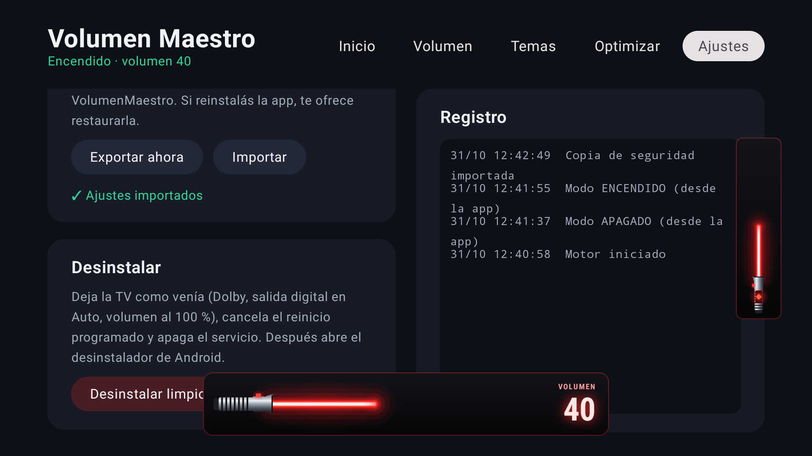
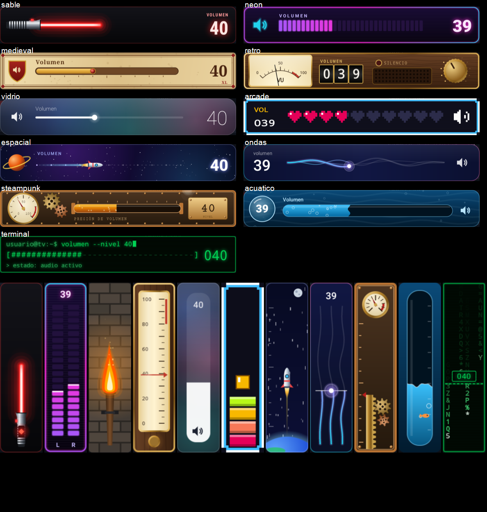
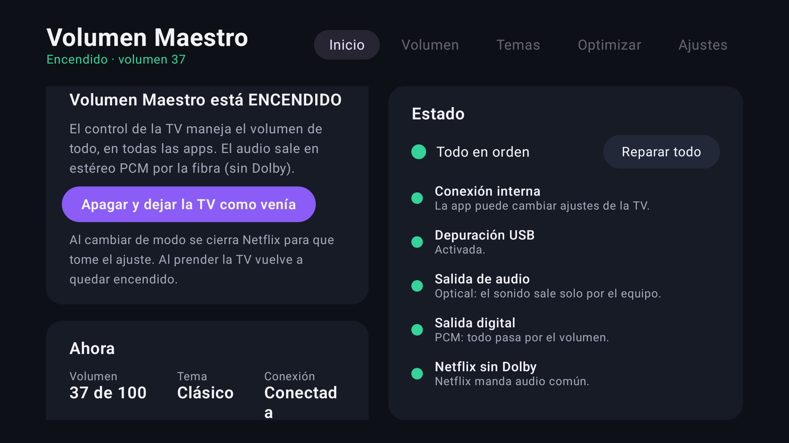
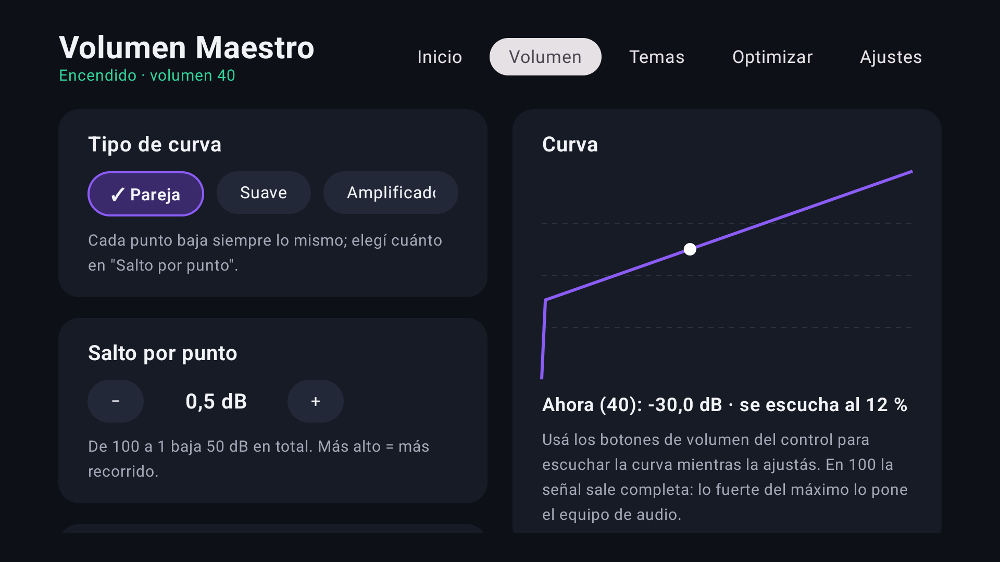
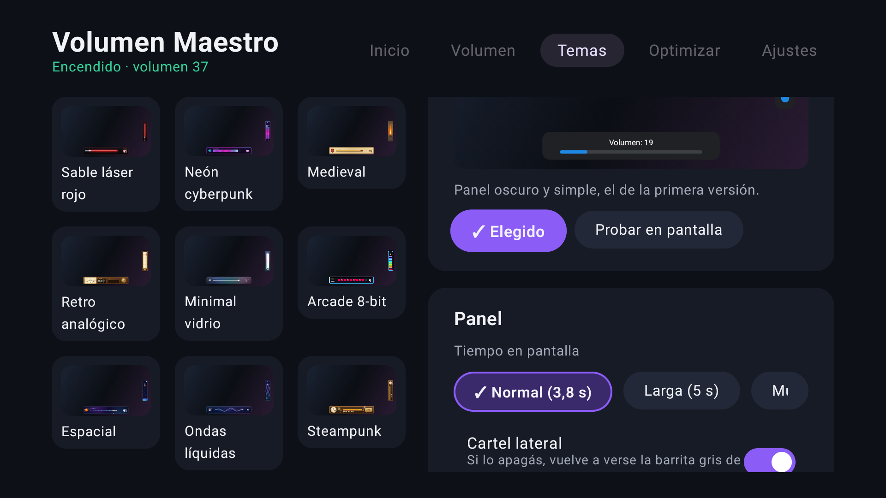
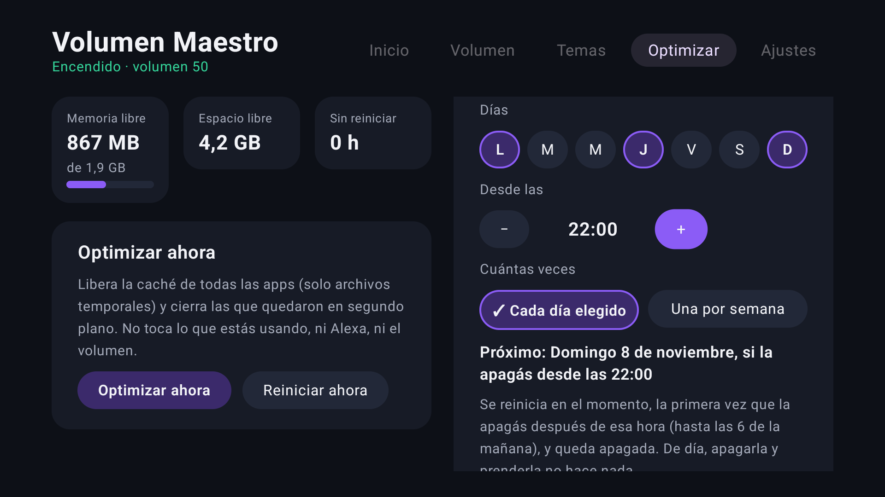

El control de tu TV vuelve a manejar el volumen del equipo de audio, aunque esté conectado por fibra óptica. Para Android TV / Google TV, con 15 temas animados.
Conectaste un equipo de audio a la TV por fibra óptica. La TV deja esa salida a volumen fijo: los botones de volumen no hacen nada y aparece "Audio output through optical fibers does not support volume adjustment". Tenés que usar el control del equipo. Si además el equipo es viejo y no tiene HDMI ARC, no hay forma de que la TV lo maneje.
En todas las apps: YouTube, Netflix, Spotify… También responde a Alexa.
El equipo queda fijo en un volumen alto y la TV baja su propia señal, justo antes de la salida.
Los carteles de la TV quedan tapados por los tuyos: sable láser, neón, medieval, arcade, steampunk, Noche de brujas y más.
El botón TCL Home abre las apps abiertas con vista previa; dos toques vuelven a la anterior.
Optimizar con un botón y reinicio al apagar de noche, en los días que elijas.
Sin root y sin hardware extra.
Aunque diga "no soportado", la TV anota el volumen cada vez que tocás el control.
Con tu curva (dB por punto, suave o tipo amplificador) lo convierte en el volumen maestro de Android, que se aplica a todo el audio.
La app se conecta a la depuración de la propia TV con su clave, autorizada una vez. Sobrevive a los reinicios.
Dos ventanas opacas tapan los avisos de la TV con el tema que elegiste.
El Dolby viaja comprimido hasta el equipo y ningún software lo puede bajar. Con la app encendida todo sale en PCM estéreo. Para una película con sonido envolvente, la apagás con un botón y la TV queda como venía.
Capturados en la TV donde se hizo la app. Cada tema dibuja el panel de abajo y el cartel lateral. Probalos animados.


Cinco pestañas que se manejan con el control.




adb install volumen-maestro.apk.Hecha y probada en una TCL Google TV (Android TV 12) con un receptor Sony por fibra. Detalles y compatibilidad en el README.